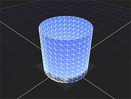
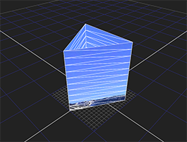

圆柱体是具有两个完全相同的平端 (圆形或椭圆形) 和一个弯曲边的对象。你可以控制它的几何分辨率，或者面部计数 (当然，还有用图像纹理)。
|
 |
| 圆柱体对象。 |
| 1。 | 单击 3D > 几何 > 气缸 到 Ins Ert 是一个圆柱体节点。 |
| 2. | 拖动圆柱体节点的 Img 管道读取节点包含要用作纹理的剪辑。 |
| 3. | 将场景节点的一个编号管道拖动到 “圆柱体” 节点，以在场景中放置圆柱体。 |
| 4. | 使用圆柱体对象的变换控制来操纵圆柱体在 3D 空间中的位置、比例和旋转。有关更多信息，请参见 从节点属性面板转换 . |
默认情况下，圆柱体有 30 行和 30 列。但是，您可以根据需要增加或减少这两个数字。例如，下图显示了一个圆柱体，其几何分辨率已降至 10 行 3 列。
|
 |
| 低分辨率圆柱体。 |
要调整圆柱体的几何分辨率:
| 1。 | 如有必要，双击 o N 显示其参数的圆柱体节点 (从而选择场景中的对象)。 |
| 2. | 增量或递减 行 用于调整圆柱体上纬度划分的数量的字段。 |
| 3. | 增量或递减 列 字段来调整气缸上的纵向分割数。 |
|
|